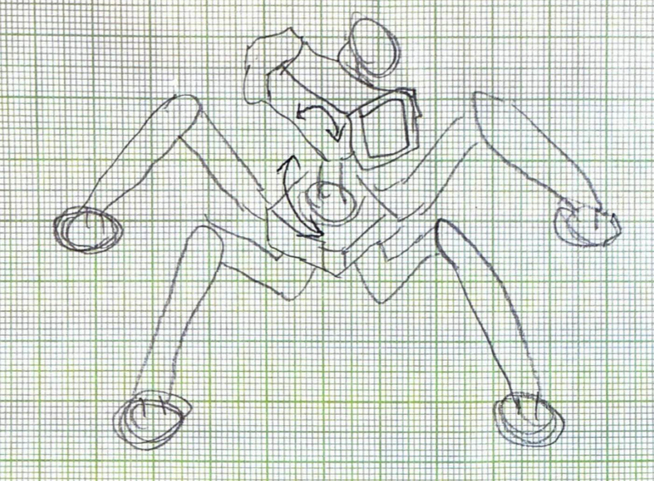
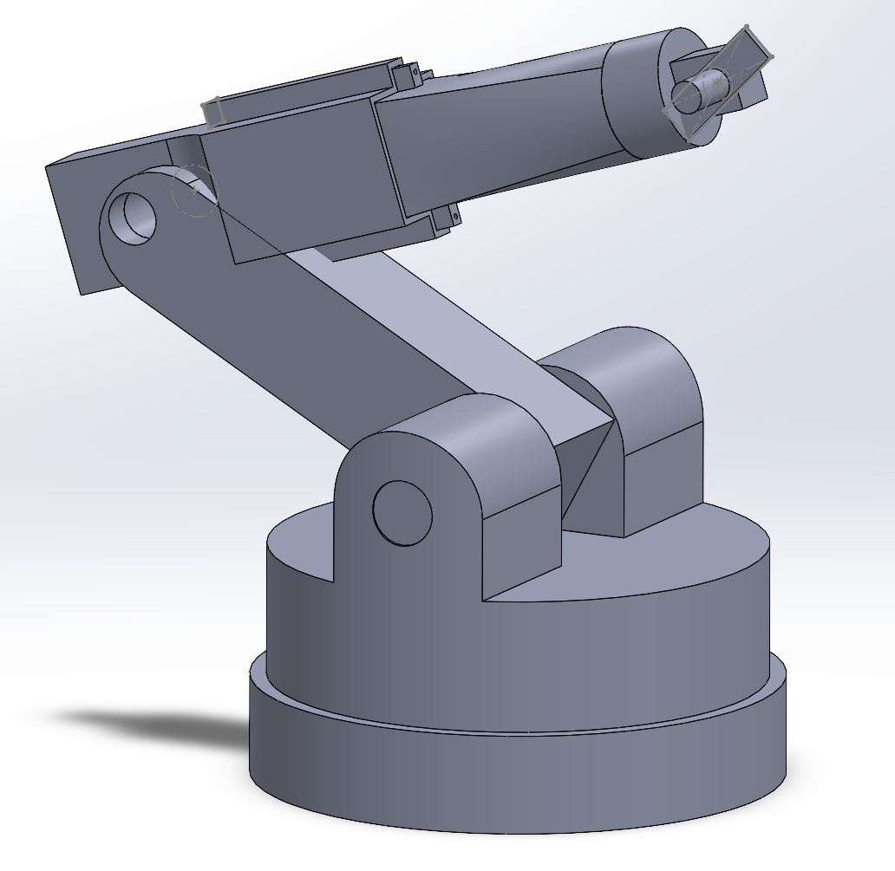
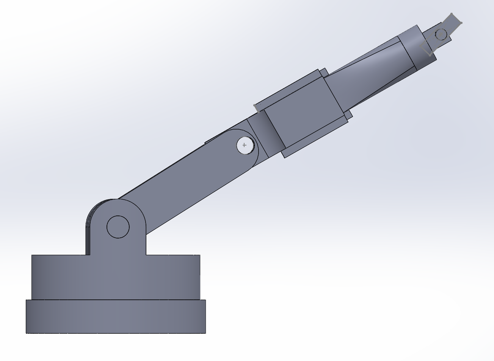
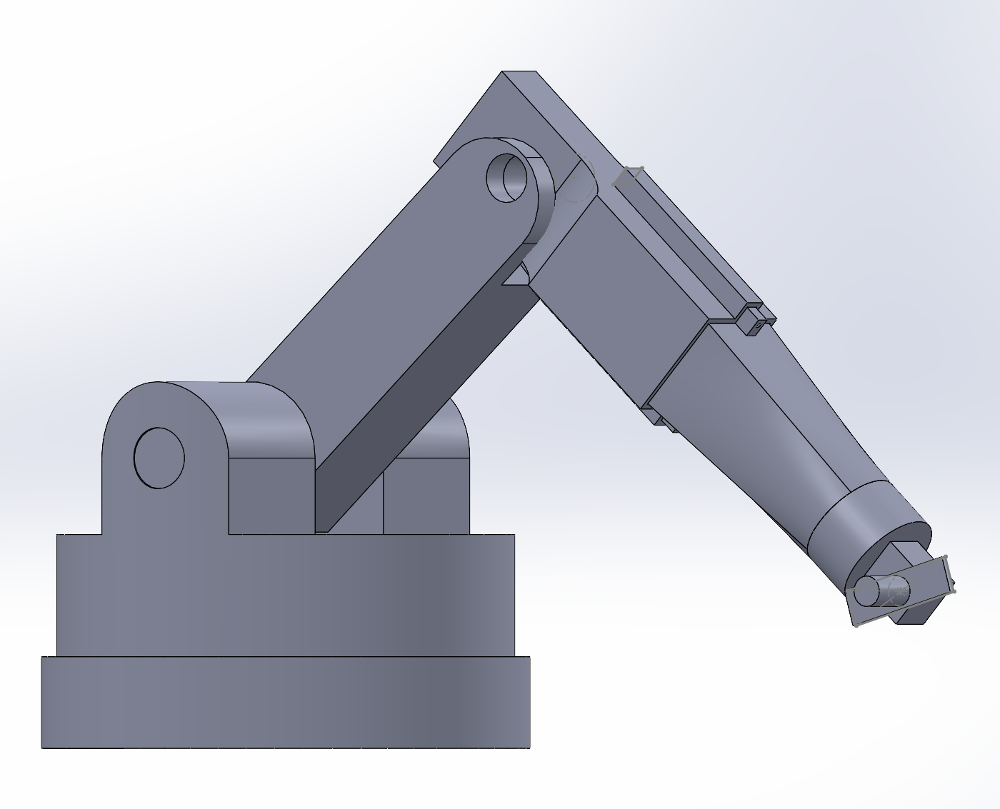

For the final project of this second-year course in engineering design, I worked in a group of five students to develop a detailed conceptual design of a robot arm for hobby-level cinematographers. The design will enable hobbyists and beginner cinematographers to mount a light-weight camera to the arm’s end-effector to create cinematic moving-camera shots at a low cost.
The following engineering specifications are derived from comprehensive market research. The objectives aim to
balance high performance, as outlined in existing designs, with practical considerations such as cost,
manufacturability, and usability.
Initial concept sketches exploring different mechanical configurations and joint arrangements.



This project had an unconventional team formation process. Midway through the semester, another student and I joined an existing three-person team after a member departed from our original group due to unforeseen circumstances. With the newly formed five-person team, we had to quickly integrate different approaches and ideas.
Despite the unusual circumstances, the transition was smooth. We held initial meetings to align on project direction, shared our preliminary research and concept sketches, and divided responsibilities based on each member's strengths. As late joiners, we focused on:
I am grateful for this opportunity to learn the importance of adaptability in team settings. Effective communication is the key to overcoming structural challenges in collaborative projects.
For complete technical specifications, CAD drawings, and detailed analysis, download the full project report: